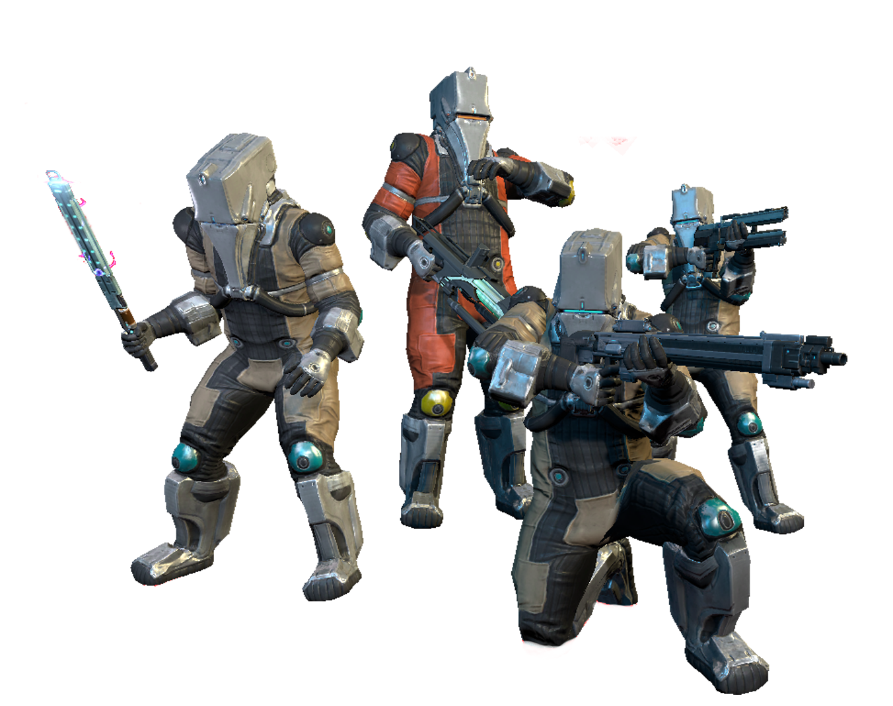
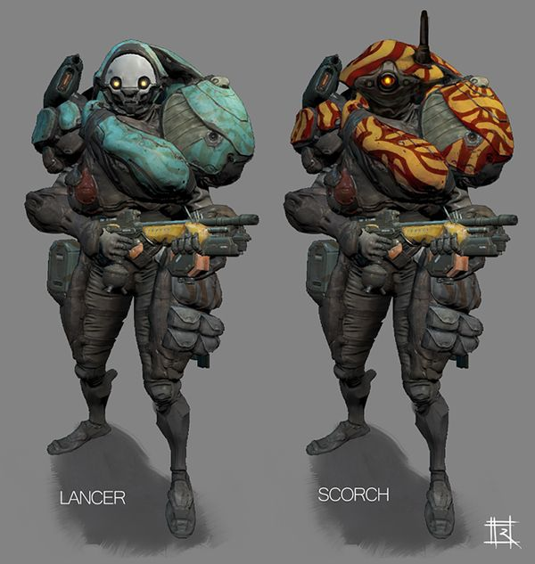

INICIO
El Sistema Origen es un vasto y peligroso territorio, lleno de secretos oscuros y criaturas que desafían las leyes de la naturaleza. En este desolado rincón del universo, los Tenno, guerreros místicos despertados de un largo sueño, deben enfrentarse a diversas facciones enemigas, cada una con sus propios motivos y ambiciones. Desde los implacables Grineer, con su ejército militarizado y sus ambiciones expansionistas, hasta los Corpus, despiadados mercaderes de la tecnología que no dudan en explotar todo a su paso, el camino de los Tenno está plagado de amenazas. Pero estas facciones no son las únicas que se interponen en su lucha por la supervivencia. Los Infestados y los Orokin, cada uno con sus oscuros secretos, también desempeñan un papel crucial en el conflicto. En esta sección, exploraremos las principales facciones que habitan el Sistema Origen y sus intereses, tácticas y la historia detrás de cada uno de ellos. Prepárate para descubrir a los enemigos que los Tenno deben enfrentarse, sus motivaciones y cómo cada uno contribuye al caos que define este universo.
Acerca de
Esta página nace de la pasión por el universo de Warframe y el deseo de profundizar en uno de sus aspectos más fascinantes: las facciones enemigas que habitan el Sistema Origen. Aquí encontrarás información detallada, análisis y curiosidades sobre cada una de estas facciones —desde los brutales Grineer hasta los misteriosos Sentients— con el objetivo de ayudar tanto a nuevos jugadores como a veteranos a comprender mejor el trasfondo, la evolución y el impacto de cada enemigo en el juego. Nuestro propósito es ofrecer una fuente confiable y actualizada para quienes quieran explorar el lore, la estrategia y la complejidad de estas organizaciones que moldean el conflicto en Warframe. Ya sea que busques mejorar tu conocimiento táctico o simplemente quieras conocer más sobre la historia detrás del caos, esta página es para ti.
Facciones enemigas en el sistema origen
Aqui se presentan las facciones enemigas que se encuentran en el sistema origen del unvierso de Warframe.
- Facción Corpus 
- Facción Grineer 
| Información | Corpus | Grineer |
|---|---|---|
| Primera visita | Planeta Venus, Fortuna | Planeta Tierra, Cetus |
| Descripción | Robots avanzados | Clones mutantes |
| Armas poderosas | Anuladores de habilidad | Misiles dirigidos |
| Debilidad | Radiación o magnétismo | Toxina o Gas |
| Jefe | Parvos Granum | Till Regor |